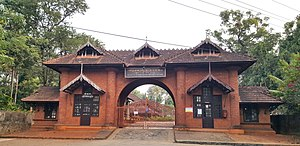

The culture of Kerala has developed over the past millennia, influences from other parts of India and abroad. It is defined by its antiquity and the organic continuity sustained by the Malayali people.[3] Modern Kerala society took shape owing to migrations from different parts of India and abroad throughout Classical Antiquity.
Kerala traces its non-prehistoric cultural genesis to its membership (around the AD 3rd century) in a vaguely defined historical region known as Thamizhagom — a land defined by a common Tamil culture and encompassing the Chera, Chola, and Pandya kingdoms. At that time, the music, dance, language (first Dravida Bhasha — "Dravidian language" — then Tamil), and Sangam (a vast corpus of Tamil literature composed between 1,500–2,000 years ago) found in Kerala were all similar to that found in the rest of Thamizhagom (today's Tamil Nadu). The culture of Kerala evolved through the Sanskritization of Dravidian ethos, revivalism of religious movements and reform movements against caste discrimination. Kerala showcases a culture unique to itself developed through accommodation, acculturation and assimilation of various faculties of civilized lifestyle.

The Thunchath Ezhuthachan Malayalam University is situated at Thunchan Parambu, Tirur, Malappuram
The Sangam literature can be considered as the ancient predecessor of Malayalam.[14] Malayalam literature is ancient in origin, and includes such figures as the 14th century Niranam poets (Madhava Panikkar, Sankara Panikkar and Rama Panikkar), whose works mark the dawn of both modern Malayalam language and indigenous Keralite poetry. Some linguists claim that an inscription found from Edakkal Caves, Wayanad, which belongs to 3rd century CE (approximately 1,800 years old), is the oldest available inscription in Malayalam, as they contain two modern Malayalam words, Ee (This) and Pazhama (Old), those are not found even in the Oldest form of Tamil. Sangam works can be considered as the ancient predecessor of Malayalam.[14] The origin of Malayalam calendar dates back to year 825 CE.[16][17][18] It is generally agreed that the Quilon Syrian copper plates of 849/850 CE is the available oldest inscription written in Old Malayalam. For the first 600 years of Malayalam calendar, the literature mainly consisted of the oral Ballads such as Vadakkan Pattukal (Northern Songs) in North Malabar and Thekkan Pattukal (Southern songs) in Southern Travancore.[14] The earliest known literary works in Malayalam are Ramacharitam and Thirunizhalmala, two epic poems written in Old Malayalam. Malayalam literature has been presented with 6 Jnanapith awards, the second-most for any Dravidian language and the third-highest for any Indian language.
Native traditions of classical performing arts include koodiyattom, a form of Sanskrit drama or theatre and a UNESCO-designated Human Heritage Art. Kathakali (from katerumbu ("story") and kali ("performance")) is a 500-year-old form of dance-drama that interprets ancient epics; a popularized offshoot of kathakali is Kerala natanam (developed in the 20th century by dancer Guru Gopinath). Meanwhile, koothu is a more light-hearted performance mode, akin to modern stand-up comedy; an ancient art originally confined to temple sanctuaries, it was later popularized by Mani Madhava Chakyar. Other Keralite performing arts include mohiniyaattam ("dance of the enchantress"), which is a type of graceful choreographed dance performed by women and accompanied by musical vocalizations. Thullal, Thirayattam, padayani, and theyyam are other important Keralite performing arts. Thirayattam is one of the most outstanding Ethnic art of Kerala. This vibrant ritualistic annual performing art form enacted in courtyards of "Kaavukal"(sacred groves) and village shrine.[10]